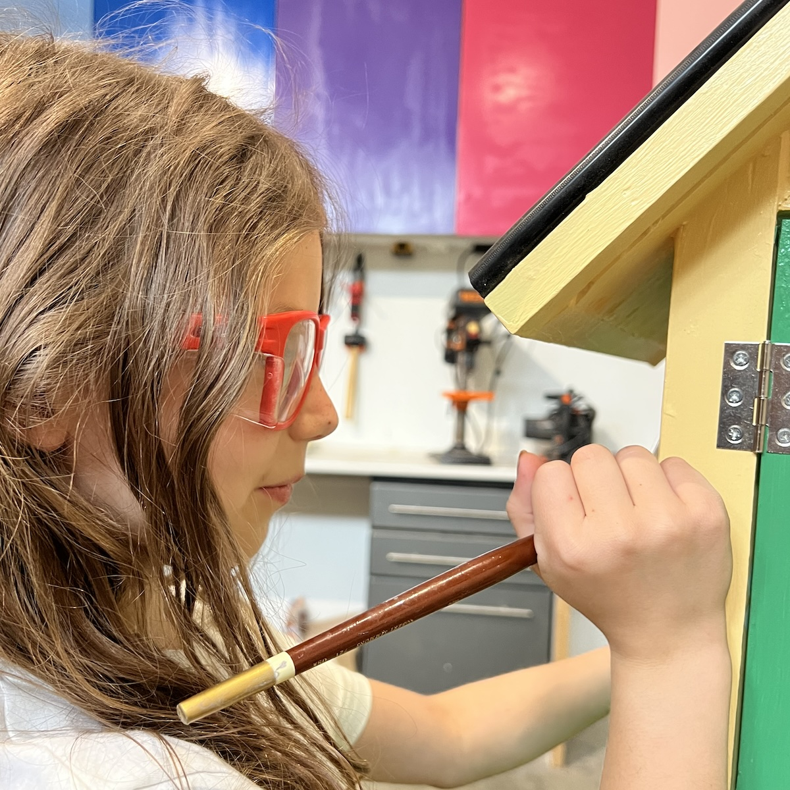
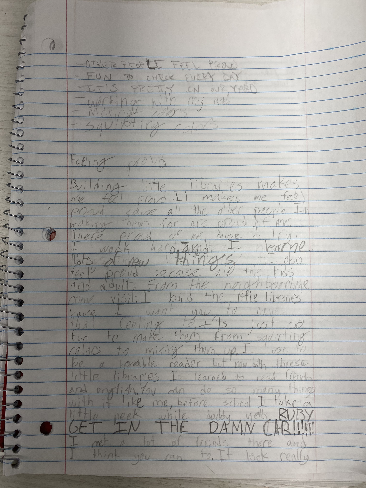
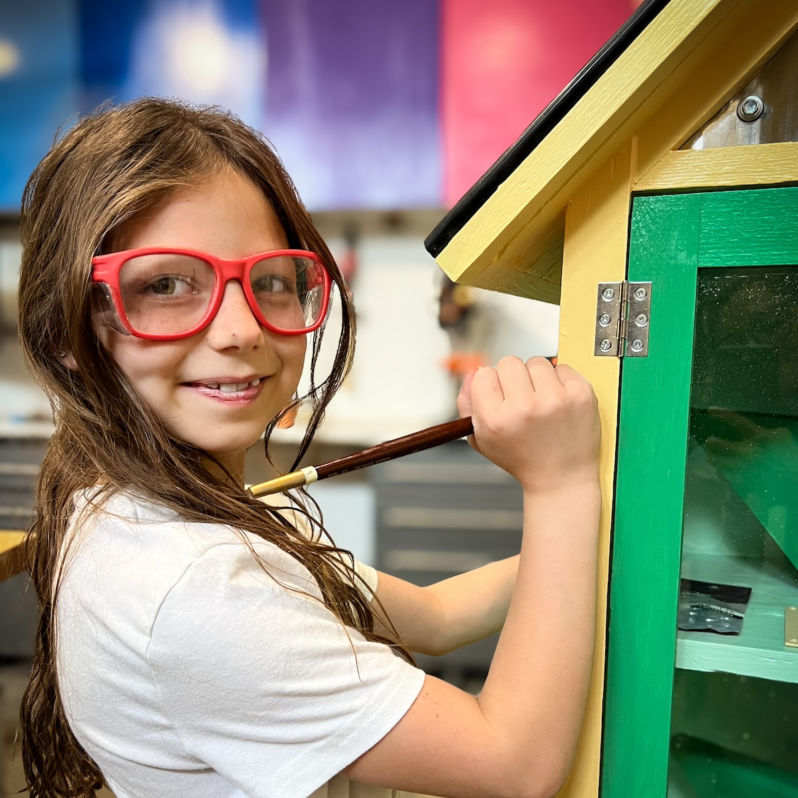
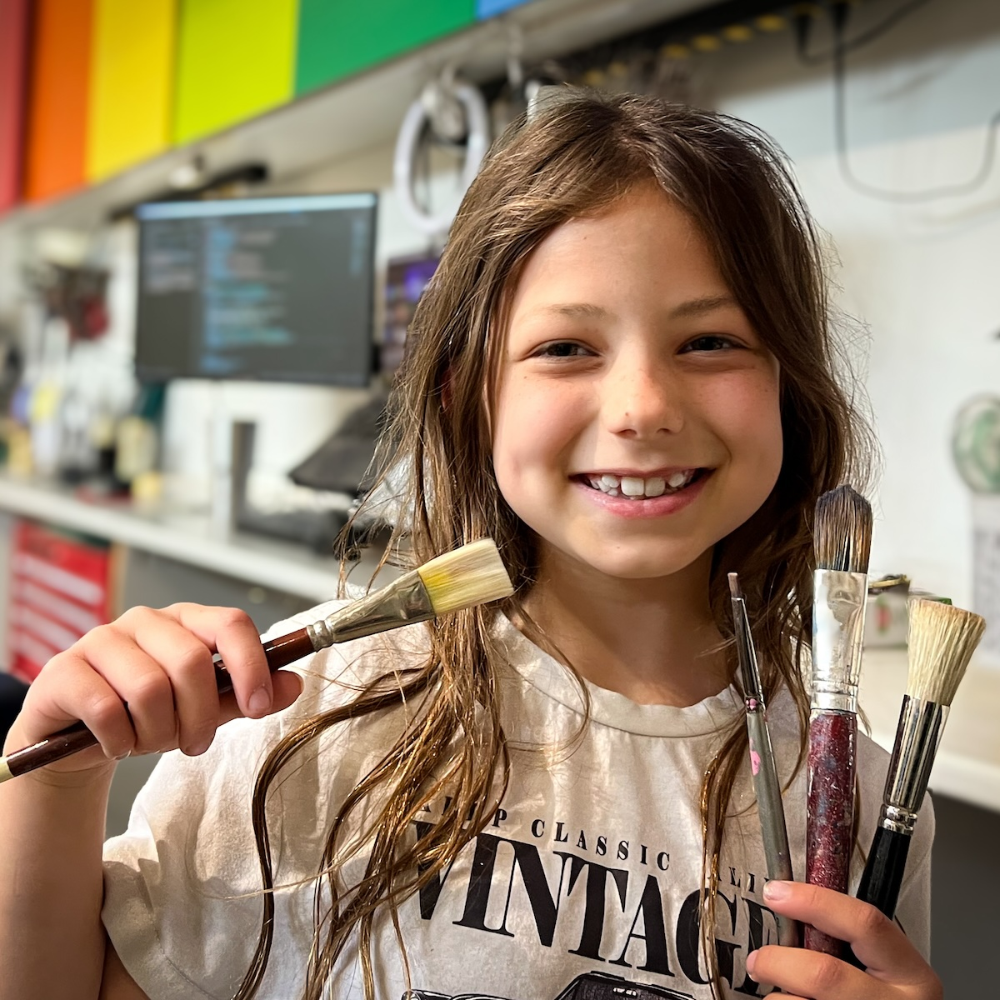

Building little libraries makes me feel proud. It makes me feel proud because all the other people I'm making them for are proud of me. They're proud of me because I try.
I work hard and learn lots of new things. I also feel proud because all the kids and adults from the neighborhood come visit. I build the little libraries because I want you to have that feeling too.
It's just so fun to make them - from squirting colors to mixing them up.
I used to be a horrible reader, but now with these little libraries, I learned to read French and English! You can do so many things with it, like me.
Before school, I take a little peek while daddy yells: Ruby, get in the damn car!
I met a lot of friends there and I think you can too. It looks really pretty in our yard.
We can make your little library look like whatever you want it to!
Meet the rest of the family »

